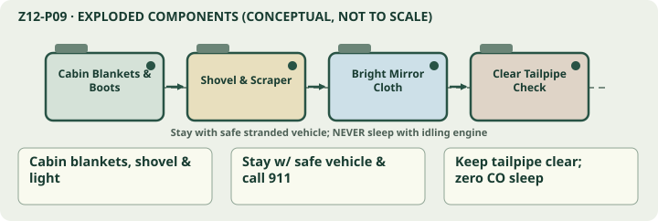

Z12-P09 · Extreme environments · Adapted historical material
Stage a winter vehicle emergency kit and stranded-blizzard response
Keep winter road travelers warm, visible and carbon-monoxide-safe if immobilized by a blizzard or drift.
When it applies · Winter highway, rural road and trailhead driving across northern climates.
Equipment · Winter vehicle kit (warm sleeping bags/blankets, dry boots/mittens, shovel, scraper, flashlight, phone charger, safe water/snacks, bright cloth, traction grit).

Actions
- Pack winter survival layers INSIDE the passenger cabin (not locked in an unreachable iced trunk) before winter travel, keeping fuel tanks at least half full during cold snaps.[E14, E25, T12]
- If stranded in a blizzard with no immediately visible safe building, STAY WITH THE VEHICLE, call 911/contact with mile marker or road name, tie a bright cloth to the mirror/antenna when wind permits and rely on dry layers first.[E14, T06, E05]
- Keep the exhaust tailpipe completely cleared of drifting snow before any brief awake engine run; NEVER run a vehicle in a drifted snowbank or garage and shut off immediately if exhaust odor or dizziness occurs.[E14, E25, C16, C07]
Failure recognition · Abandoning a stalled car in a rural blizzard to walk "just a mile" to town, or sleeping with the engine idling while blowing snow plugs the tailpipe.[E14, E25, C07]
Verify · Confirm winter cabin kit is accessible, phone/contacts are notified and tailpipe clearance is physically checked before any brief engine use.[E14, E25, ED]
Stop or change course · If the vehicle sits in an active traffic lane, floodwater, fire risk or suspected CO buildup, exit immediately to the safest off-road clear refuge and call 911.[E14, C07, T01]
Evidence and editorial notes
- C07 · CPSC · Carbon Monoxide Fact Sheet (current web edition)
- Section: CO poisoning symptoms; what to do if suspected · Conditions: Suspected carbon monoxide exposure
Support: Escape to fresh air immediately and contact emergency services. Symptoms can include headache, dizziness, nausea and confusion.
Limitations: CO is colorless and odorless; symptoms mimic viral illness or altitude fatigue and can incapacitate sleepers without waking. · Conflicting evidence: None; aligns with CDC-CO.
Editorial note: Standard CO emergency stop condition across Z02 and Z03. · Specialist reviewer: Carbon monoxide safety and emergency medicine
Primary source · checked 2026-11-24 - C16 · CDC · Carbon Monoxide Poisoning Basics (current web edition)
- Section: Carbon Monoxide Poisoning Basics > Sources and Prevention · Conditions: Any enclosed or semi-enclosed structure, garage, porch, tent, or vehicle
Support: Never burn charcoal, operate camp stoves, or run fuel-burning heaters inside homes, garages, tents, or vehicles even with doors or windows partly open.
Limitations: Vent cracks and open garage doors do not prevent lethal CO accumulation. · Conflicting evidence: Refutes dangerous myth that cracking a tent vent or garage door makes indoor combustion safe.
Editorial note: Hard-stop rule across all Z02 ventilation and Z03 combustion cards. · Specialist reviewer: Carbon monoxide safety and emergency medicine
Primary source · checked 2026-11-24 - E05 · NWS · What To Do If You're Caught in a Winter Storm (current web edition)
- Section: Outside and find shelter · Conditions: Cold, wet or windy winter conditions
Support: Block wind, stay dry and keep off cold ground. Keep exposure reduction separate from making a fire.
Limitations: Improvised windbreaks do not provide rated thermal protection or snow-load capacity. · Conflicting evidence: None; aligns with CDC-H.
Editorial note: Separates wind, ground, and moisture heat-loss pathways. · Specialist reviewer: Cold-weather shelter specialist
Primary source · checked 2026-11-24 - E14 · NWS · What To Do If You're Caught in a Winter Storm (current web edition)
- Section: In vehicles during a winter storm · Conditions: Vehicle stranded in winter weather with no immediate vehicle hazard
Support: Stay with the vehicle if a safe nearby destination is not obvious. Make the vehicle visible and notify others when possible.
Limitations: Snow-blocked exhaust pipes create rapid lethal CO hazards if an engine is run. · Conflicting evidence: None; keeps shelter decision distinct from idling engine advice.
Editorial note: Used for stranded-vehicle shelter and exhaust-hazard checks. · Specialist reviewer: Winter response and carbon monoxide safety
Primary source · checked 2026-11-24 - E25 · FEMA / Ready.gov · Winter Weather (current web edition)
- Section: Winter Weather > Stay Safe During Winter Storms · Conditions: Extreme cold, drifting snow, and power or travel disruption
Support: Prepare layered clothing, emergency shelter/heat alternatives, and vehicle winter kits; stay indoors during blizzards, protect against frostbite/hypothermia, and keep exhaust vents and exits clear of drifting snow.
Limitations: Drifting snow can block tent vents, doors, and vehicle tailpipes silently overnight. · Conflicting evidence: None; reinforces overnight exit/vent clearance checks.
Editorial note: Supports snow-drift exit maintenance and winter shelter failure recognition. · Specialist reviewer: Cold-weather shelter and emergency management
Primary source · checked 2026-11-24 - T01 · American Red Cross · First Aid Steps (current web edition)
- Section: First Aid Steps > Check the scene; check the person · Conditions: Lay responder in United States; assess safety before contact
Support: Check scene safety, responsiveness, breathing and immediately life-threatening conditions.
Limitations: Lay guidance does not replace advanced clinical or rescue protocols. · Conflicting evidence: None; universal first-response opening gate.
Editorial note: Anchors scene-safety-first rule across Z01. · Specialist reviewer: EMS and wilderness medicine
Primary source · checked 2026-11-24 - T06 · NPS · Outdoor Emergency Plan (current web edition)
- Section: If you get lost or hurt; call for help · Conditions: Outdoor US emergency
Support: Communicate location, last known point, situation and needs. Stay put when unable to establish a safe route unless immediate danger requires movement.
Limitations: Cell signal is unreliable in backcountry terrain; pre-trip plans bridge communication gaps. · Conflicting evidence: None; core lost-person decision rule.
Editorial note: Foundation for stay/signal/move and dispatch handoff cards. · Specialist reviewer: Search and rescue
Primary source · checked 2026-11-24 - T12 · FEMA / Ready.gov · Build a Kit (current web edition)
- Section: Build a Kit > Basic Disaster Supplies Kit and Maintenance · Conditions: Overnight and multi-day emergency readiness
Support: Assemble water, food, light, NOAA/battery radio, first aid, whistle, local maps, sanitation, medications, and backup power; inspect expiration dates and batteries regularly.
Limitations: Standard 72-hour kits do not cover extended multi-day isolation without replenishment or specialized cold/medical items. · Conflicting evidence: None; links kit readiness to periodic maintenance checks.
Editorial note: Supports equipment readiness, inspection, and overnight-emergency cards. · Specialist reviewer: Emergency management and field readiness
Primary source · checked 2026-11-24
Source lineage · B012-P02, NWS winter storms and Ready.gov winter; adapted historical material · Classification · Adapted historical material.